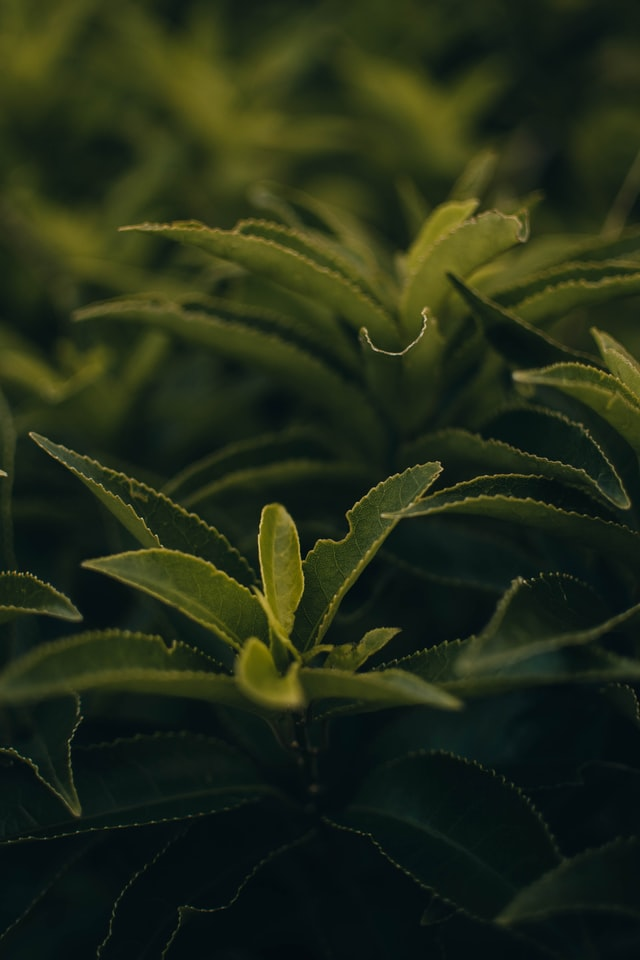
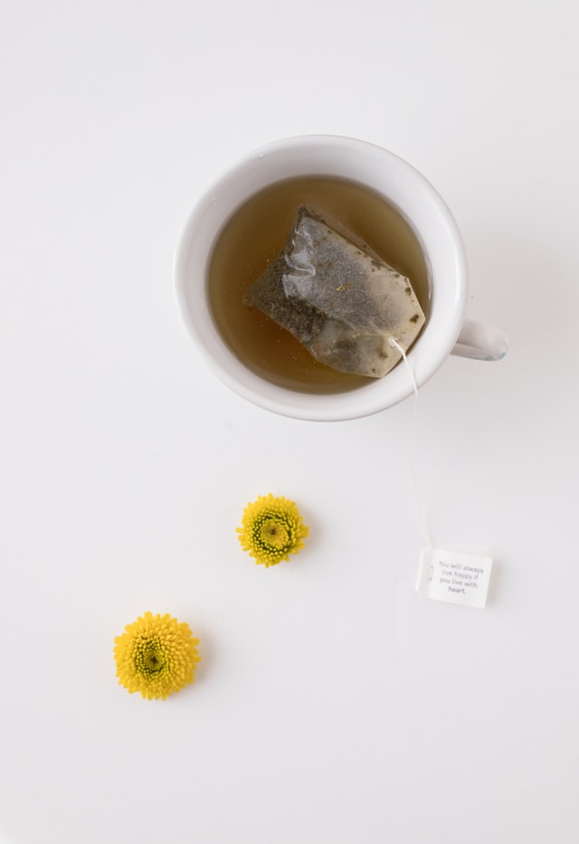

How It's Made
For green tea, the tea leaves are harvested from the Camellia sinensis plant and are then quickly heated—by pan firing or steaming—and dried to prevent too much oxidation from occurring that would turn the green leaves brown and alter their fresh-picked flavor.
Facts

green tea has been used in traditional Indian and Chinese medicine

there are many different types of green tea available
green tea may help prevent a range of ailments including cancer